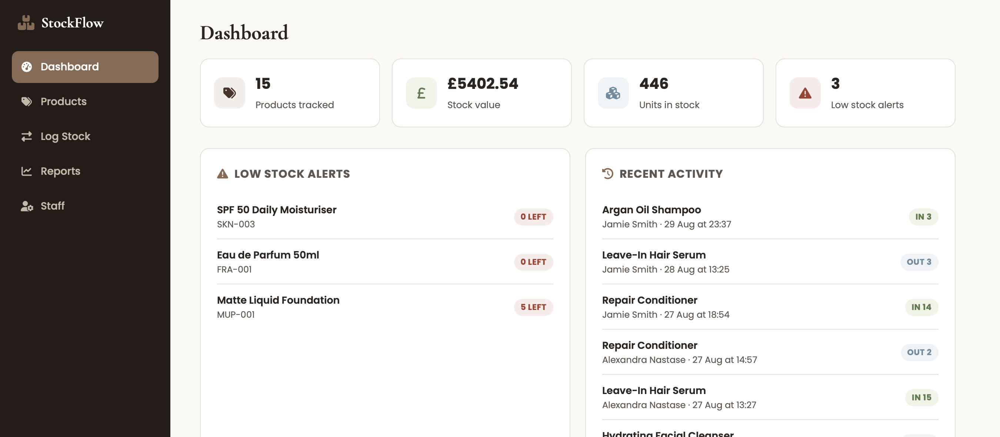
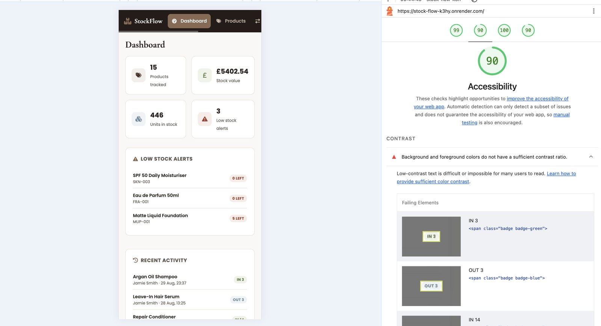
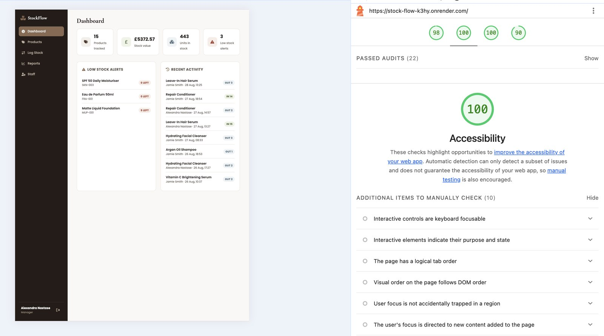

A full-stack inventory and stock management system for a beauty retailer, built with a Python/Flask REST API and a vanilla JavaScript front-end, with role-based accounts for managers and sales staff drawing on my own retail experience.

From working retail shop floors, I've seen first-hand how easily stock tracking breaks down when it's kept on paper or scattered across spreadsheets: nobody notices a product has run out until a customer asks for it, deliveries and sales aren't logged consistently, and staff without management responsibilities often can't see stock levels at all, or can see and change things they shouldn't.
Build a working inventory and stock management system that a small beauty retailer could actually use: a product catalogue with live stock levels, a simple way for any staff member to log deliveries and sales, automatic low-stock alerts, and reporting, all behind accounts that separate what a manager can do from what a sales assistant can do.
session, and passwords hashed with Werkzeug rather than stored in plain text.login_required/manager_required decorator pattern so manager-only routes (deleting products, managing staff) reject a sales assistant's request at the server, not just hide the button in the UI.fetch() against the API, with no framework or build step.Recomputing stock from the full movement history on every page load would work but doesn't scale, and a naive update can let stock go negative if two "stock out" entries are logged in quick succession. I kept a denormalised current_stock column that updates atomically alongside each movement insert, with a guard that rejects an "out" movement if the quantity exceeds what's actually in stock.
Hiding a "Delete Product" button for a sales assistant means nothing if the underlying API route still accepts the request from anyone logged in. I tested this directly, calling manager-only endpoints from a sales assistant session with the UI controls removed entirely, and confirmed the server itself rejects them with a 403 regardless of what the front-end shows.
The app worked perfectly locally on a fixed port, then returned nothing when I first deployed it, since hosting platforms assign their own port at runtime through a PORT environment variable rather than letting an app hardcode one. I updated the app to read that variable when present, bind to 0.0.0.0 instead of localhost, and seed the demo database automatically on first boot, since there's no terminal on the live server to run a seed script by hand.
Running a Lighthouse audit on the deployed app scored Accessibility at 90, flagging the small "IN"/"OUT" stock-movement badges: the green and blue badge text sat at roughly 4.26:1 and 3.17:1 contrast against their backgrounds, both under the 4.5:1 WCAG AA minimum for text that size. I calculated the exact contrast ratio for each colour pair, then darkened the green and blue until both cleared 4.5:1 with a safety margin (5.0:1 and 5.1:1), without changing the warm palette the rest of the app uses. Re-running Lighthouse afterwards confirmed a 100.
Before/after Lighthouse scores from the colour-contrast fix above, run against the live deployment.


StockFlow is a complete, working inventory system: log in as a manager or a sales assistant, add and edit products, log stock in and out, and see the effect immediately on the dashboard and reports, deployed live rather than only running locally.
Where my NHS project is about database design and my e-commerce site is about the front-end, this project ties both together: a real backend API, a database it actually talks to, and a UI built to consume that API, plus the practical experience of taking a Flask app from my own machine to a live, publicly reachable deployment.
If I extended it further, the next additions would be barcode-based stock lookups, email alerts when stock hits its reorder threshold, and a supplier/purchase-order model on top of the existing stock movements.